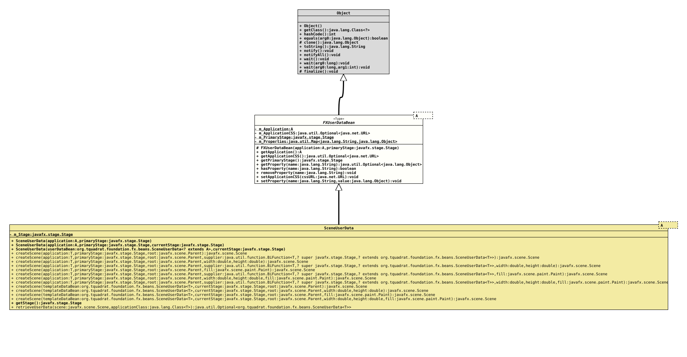

Class FXUserDataBean<A extends Application>
java.lang.Object
org.tquadrat.foundation.fx.internal.FXUserDataBean<A>
- Type Parameters:
A- The class of the JavaFX application.
- Direct Known Subclasses:
SceneUserData
@ClassVersion(sourceVersion="$Id: FXUserDataBean.java 1110 2024-03-04 15:26:06Z tquadrat $")
@API(status=INTERNAL,
since="0.1.0")
public abstract sealed class FXUserDataBean<A extends Application>
extends Object
permits SceneUserData<A>
The abstract base class for user data beans that can be used with several
JavaFX entities.
- Author:
- Thomas Thrien (thomas.thrien@tquadrat.org)
- Version:
- $Id: FXUserDataBean.java 1110 2024-03-04 15:26:06Z tquadrat $
- Since:
- 0.1.0
- UML Diagram
-

UML Diagram for "org.tquadrat.foundation.fx.internal.FXUserDataBean"
{kind=link}
-
Field Summary
Fields -
Constructor Summary
ConstructorsModifierConstructorDescriptionprotectedFXUserDataBean(A application, Stage primaryStage) Creates a newFXUserDataBeaninstance. -
Method Summary
Modifier and TypeMethodDescriptionfinal AReturns the reference to the application's main class.Returns the URL for tha application's main CSS file.final StageReturns the reference to the application's primary stage.getProperty(String name) Returns the property with the given name.final booleanhasProperty(String name) Checks whether a property with the given name exists.final voidremoveProperty(String name) Removes the property with the given name; nothing happens if there is no property with the given name.final voidsetApplicationCSS(URL cssURL) Sets the URL for the application's CSS file.final voidsetProperty(String name, Object value) Sets the property with the given name to the given value.
-
Field Details
-
m_Application
A reference to the application's main class. -
m_ApplicationCSS
The URL for the application's main CSS file. -
m_PrimaryStage
A reference to the application's primary stage. -
m_Properties
The additional properties.
-
-
Constructor Details
-
FXUserDataBean
Creates a newFXUserDataBeaninstance.- Parameters:
application- The reference for the application's main class.primaryStage- The reference for the application's primary stage.
-
-
Method Details
-
getApplication
Returns the reference to the application's main class.- Returns:
- The application class.
-
getApplicationCSS
Returns the URL for tha application's main CSS file.- Returns:
- An instance of
Optionalthat holds the CSS URL.
-
getPrimaryStage
Returns the reference to the application's primary stage.- Returns:
- The primary stage
-
getProperty
Returns the property with the given name.- Parameters:
name- The name of the property.- Returns:
- An instance of
Optionalthat holds the property.
-
hasProperty
Checks whether a property with the given name exists.- Parameters:
name- The name of the property.- Returns:
trueif there is a property with the given name (that can still benull),falseotherwise.
-
removeProperty
Removes the property with the given name; nothing happens if there is no property with the given name.- Parameters:
name- The name of the property.
-
setApplicationCSS
Sets the URL for the application's CSS file.- Parameters:
cssURL- The URL for the CSS file.
-
setProperty
Sets the property with the given name to the given value.- Parameters:
name- The name of the property.value- The new value of the property; this can benull.
-